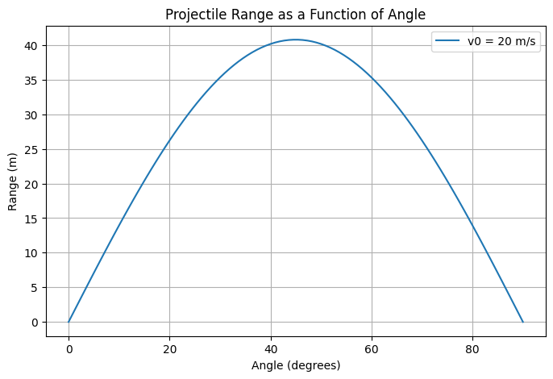
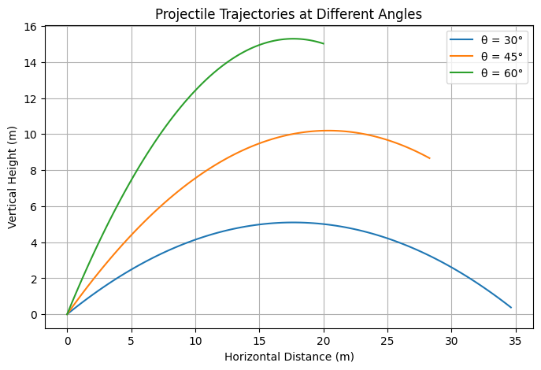

Problem 1
Investigating the Range as a Function of the Angle of Projection
1. Theoretical Background
Projectile motion is a fundamental topic in physics that explores how objects move under the influence of gravity. The horizontal range \(R\) of a projectile launched at an initial velocity \(v_0\) and an angle \(\theta\) is given by the equation:
where \(g\) is the acceleration due to gravity.
Observations
- The range is maximized when \(\theta = 45^\circ\).
- Doubling the initial velocity quadruples the range.
- Increasing \(g\) decreases the range.
2. Analysis of the Range
The relationship between range and angle follows a sine function, producing a symmetric curve with a peak at \(45^\circ\). The range equation demonstrates that different initial velocities scale the curve proportionally while maintaining its shape.
Effects of Parameters
- Initial Velocity: A higher \(v_0\) increases the range.
- Gravitational Acceleration: A larger \(g\) shortens the range.
- Launch Height: A non-zero launch height modifies the trajectory, requiring extended calculations.
3. Practical Applications
Projectile motion analysis is widely used in various fields:
- Sports: Determining optimal launch angles for kicking or throwing a ball.
- Engineering: Calculating ballistic trajectories for projectiles.
- Astrophysics: Studying object motion on planetary surfaces with varying gravity.
- Military Applications: Designing artillery systems and missile guidance.
4. Implementation
Below is a Python script to visualize the range as a function of the projection angle:
import numpy as np
import matplotlib.pyplot as plt
def projectile_range(v0, g):
angles = np.linspace(0, 90, 100)
radians = np.radians(angles)
ranges = (v0**2 * np.sin(2 * radians)) / g
return angles, ranges
v0 = 20 # Initial velocity in m/s
g = 9.81 # Gravity in m/s²
angles, ranges = projectile_range(v0, g)
plt.figure(figsize=(8, 5))
plt.plot(angles, ranges, label=f'v0 = {v0} m/s')
plt.xlabel('Angle (degrees)')
plt.ylabel('Range (m)')
plt.title('Projectile Range as a Function of Angle')
plt.legend()
plt.grid()
plt.savefig('range_vs_angle.png') # Save the figure
plt.show()
Generated Plot
The script generates the following plot:

Alternative Visualization
To visualize projectile trajectories at different angles, we use another script:
import numpy as np
import matplotlib.pyplot as plt
def projectile_trajectory(v0, theta, g, t_max=2):
t = np.linspace(0, t_max, num=100)
theta_rad = np.radians(theta)
x = v0 * np.cos(theta_rad) * t
y = v0 * np.sin(theta_rad) * t - 0.5 * g * t**2
return x, y
angles = [30, 45, 60]
v0 = 20
g = 9.81
plt.figure(figsize=(8, 5))
for angle in angles:
x, y = projectile_trajectory(v0, angle, g)
plt.plot(x, y, label=f'θ = {angle}°')
plt.xlabel('Horizontal Distance (m)')
plt.ylabel('Vertical Height (m)')
plt.title('Projectile Trajectories at Different Angles')
plt.legend()
plt.grid()
plt.savefig('trajectories.png')
plt.show()
Generated Plot

5. Discussion and Limitations
Limitations
- Air Resistance: Neglecting drag overestimates the range.
- Uneven Terrain: Real-world landscapes can affect trajectory.
- Wind Influence: External forces alter the projectile's path.
- Non-Uniform Gravity: Different gravitational fields can modify results.
Extensions
- Incorporating air resistance using numerical methods.
- Adapting the model for non-uniform gravitational fields.
- Simulating projectile motion on inclined surfaces.
- Using machine learning to predict optimal launch angles for different scenarios.
Conclusion
This study explores the dependence of range on the angle of projection, providing insights applicable across multiple disciplines. Future extensions can enhance the realism of this model by incorporating additional physical factors such as air resistance and wind effects. The computational approach helps visualize and analyze projectile motion effectively, bridging theoretical physics with real-world applications.